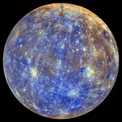

Mercurius

Mercurius - de kleinste planeet in ons zonnestelsel en het dichtst bij de zon - is iets groter dan de maan van de aarde.
Mercurius is de snelste planeet die elke 88 aardse dagen om de zon draait.
ROBOTISCHE BEZOEKERS
Twee NASA-missies hebben Mercurius verkend: Mariner 10 was de eerste die langs Mercurius vloog en MESSENGER was de eerste die in een baan om de aarde cirkelde. ESA's BepiColombo is op weg naar Mercurius.
GROTE ZON
Als onze ster op het oppervlak van Mercurius staat terwijl hij het dichtst bij de zon staat, zou hij meer dan drie keer groter lijken dan op aarde.